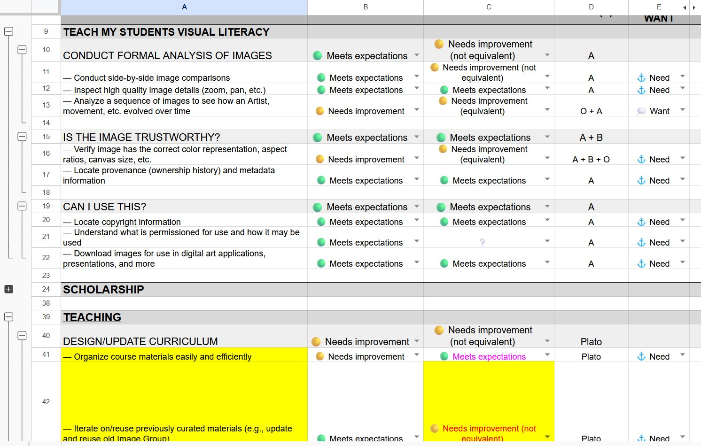
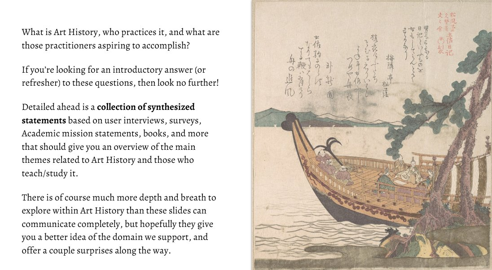
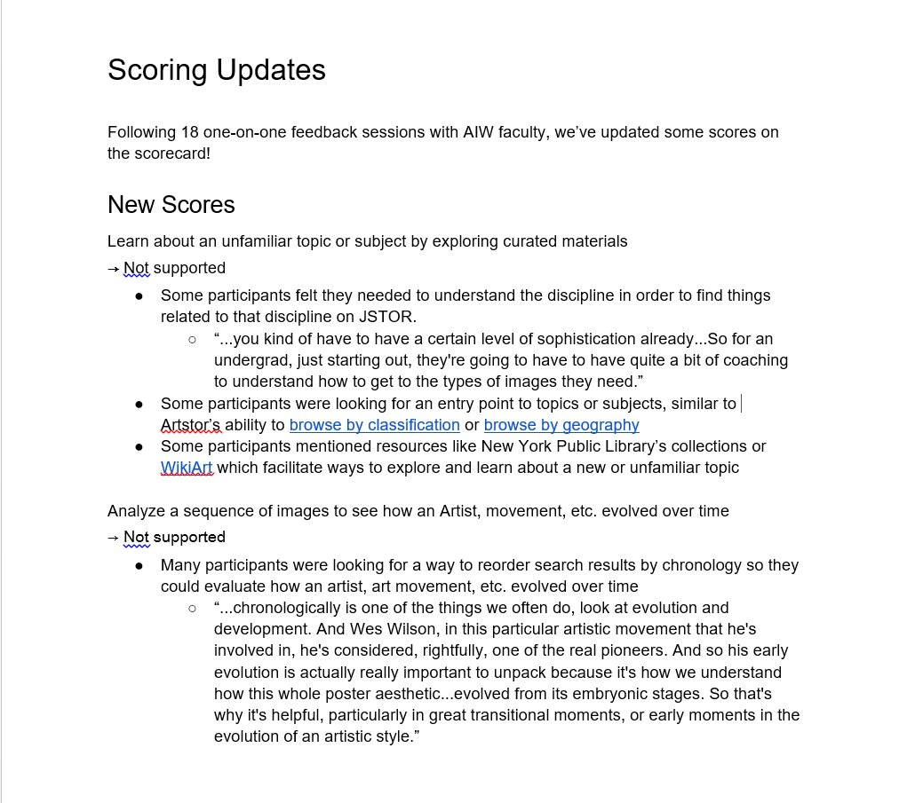
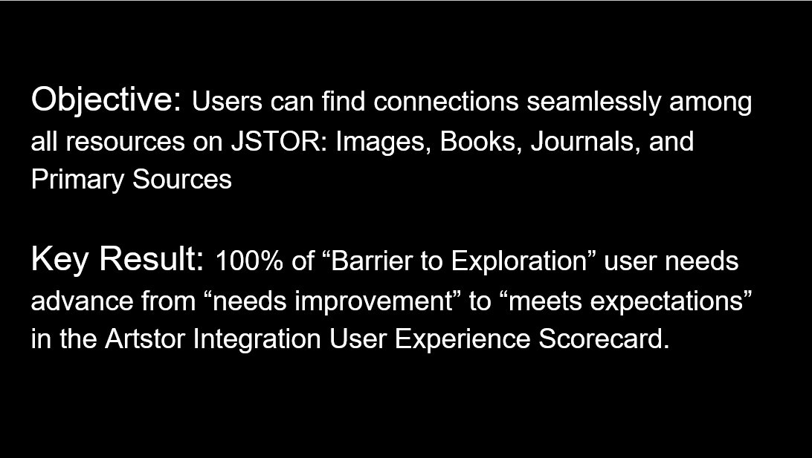
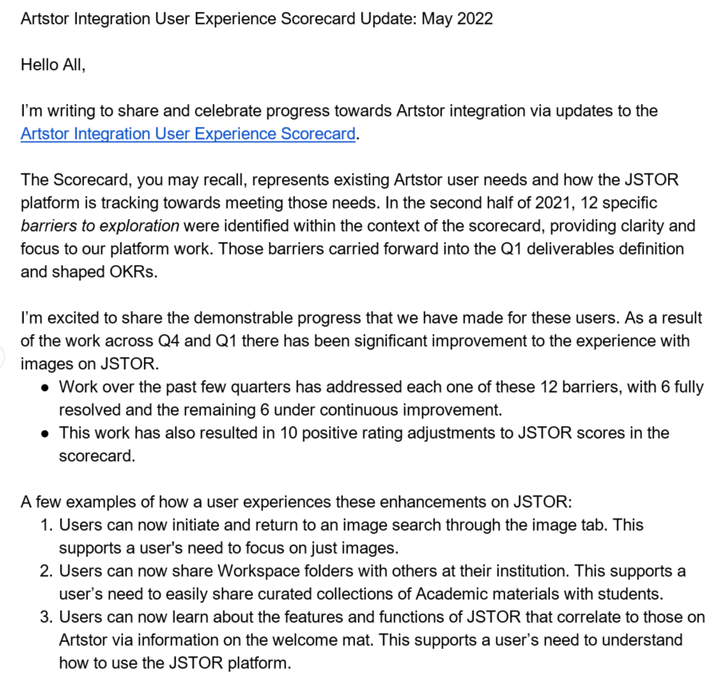

How my User Outcomes Framework brought clarity and direction to ITHAKA's two-year, multiplatform integration
When ITHAKA's effort to fold Artstor into JSTOR stalled under its own ambiguity, I built the framework that gave product, design, and leadership a shared way to define progress — and ran it for a year and a half across the org.
The integration wasn't blocked by a technical problem. It was blocked by a shared-understanding problem.
ITHAKA needed to fold Artstor — a beloved, independent platform for art history teaching and research — into JSTOR, its much larger scholarly platform. The move was financially and strategically necessary. It had also stalled.
Staff couldn't agree on what "Artstor Integration" even meant — the brand, the content, the toolset, all three? Nobody outside a small group understood who Artstor's users were or what they needed. Remote work, suddenly mandatory in 2020, made the disconnect worse. Without a shared definition of the problem, there was no way to define success, prioritize work, or know if any of it was working.
Artstor had over 1,500 academic institutions across 45+ countries subscribing to its platform of 2.5 million images. If this integration failed, those customers, that revenue, and that market position were at risk.
User Outcomes: goals stated from the user's life, not the product's feature list
I built statements that described what Art Historians were trying to accomplish in their work — independent of whether JSTOR or Artstor existed at all. That independence is what made the framework durable across the full integration: it couldn't be satisfied by shipping a feature, only by genuinely closing a gap in someone's work.
- "I want to find inspiration I wasn't expecting."
- "I want to trust the source I'm citing."
- "I want to build a lecture quickly, without losing rigor."
- "Use the search filters."
- "Download an image."
- "Increase session length." (business goal, not user goal)
I organized these statements into a Google Sheet Scorecard so that everyone in the organization could easily view and use. I also constructed a context-building artifact called "The Story of Art History." The scorecard kept the outcomes and the evaluations of how well we delivered, whereas The Story was used to onboard employees onto the project and empathize with our users and the environments they work in.

A shared Google Sheet that gave every team in the organization a live view of user outcomes, how well each product met them, and where the gaps were. Updated after every research round with direct evidence from user sessions.

Before staff could use the scorecard, they needed context for who they were designing for. This narrative deck — shown at company-wide show-and-tells and leadership 1:1s — built that shared understanding first.
This wasn't a single deliverable. It was a framework I built, then operated on a recurring research cadence as the organization's reference point through the full integration.
Stalled & ambiguous
No shared definition of the problem. No way to scope, prioritize, or measure progress.
Framework built
Research gap analysis, new primary research, and the first User Outcomes statements drafted with stakeholders.
Baseline established
First full round of scorecard research set the baseline: where JSTOR met or fell short of Artstor users' needs.
Quarterly assessments
Two more rounds re-measured progress against the baseline, refining the scorecard as understanding deepened.
"Barriers to Exploration" & resolution
Named the remaining unresolved needs that formed a leadership-owned OKR.
One scorecard line item, traced through to a real product decision
One outcome on the scorecard was "look for inspiration" — an exploratory, open-ended search where stumbling onto something unexpected was the point. Artstor's pagination wasn't built for that: by 2020, users fatigued after repeated clicks and settled rather than discovered. We tested three directions through that lens.
Keep pagination
Matches feature parity. Felt slow; users saw fewer items and rarely hit something inspiring.
Infinite scroll
Best raw volume of items seen. Attention dropped — users scrolled past the exact result they wanted.
Load more
Balanced exploration with attention. Users viewed more than pagination, engaged more deeply than scroll.
Feature parity would have kept pagination. A pure behavioral metric like "items viewed" would have rewarded infinite scroll. Grounding the decision in the actual user outcome was what made "Load more" the right call — Google reached the same conclusion on search results three years later. What made this particularly satisfying: the designer on this feature came to the scorecard on her own. She used the user outcomes to seed her ideation, then evaluated each approach against them. The framework didn't need to be handed down — it was useful enough that someone picked it up and ran with it.
What "org-wide" actually looked like
Three artifacts that show the framework in motion: research updates that fed the scorecard after every round, a leadership OKR written in the scorecard's own language, and the Barriers to Exploration framework that carried the work into 2022.



The framework became how the org defined "done"
I conducted research and validated that JSTOR met the teaching needs for over 90% of Artstor Faculty.
The organization successfully closed all gaps preventing Artstor Faculty from using JSTOR for their image needs.
On August 2024 Artstor was sunset, with JSTOR becoming the new trusted home for scholarly images.